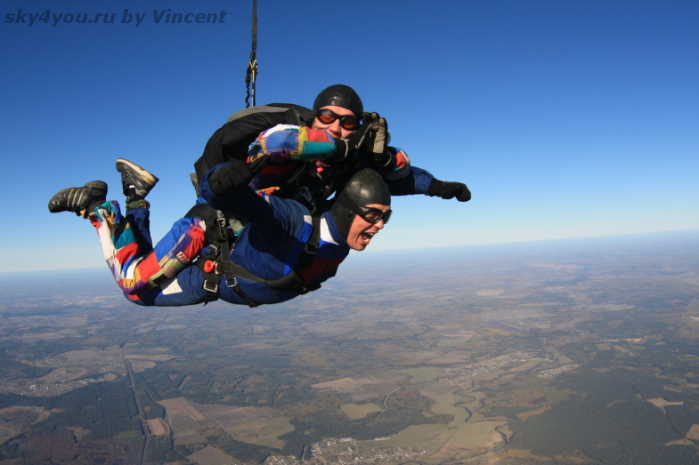
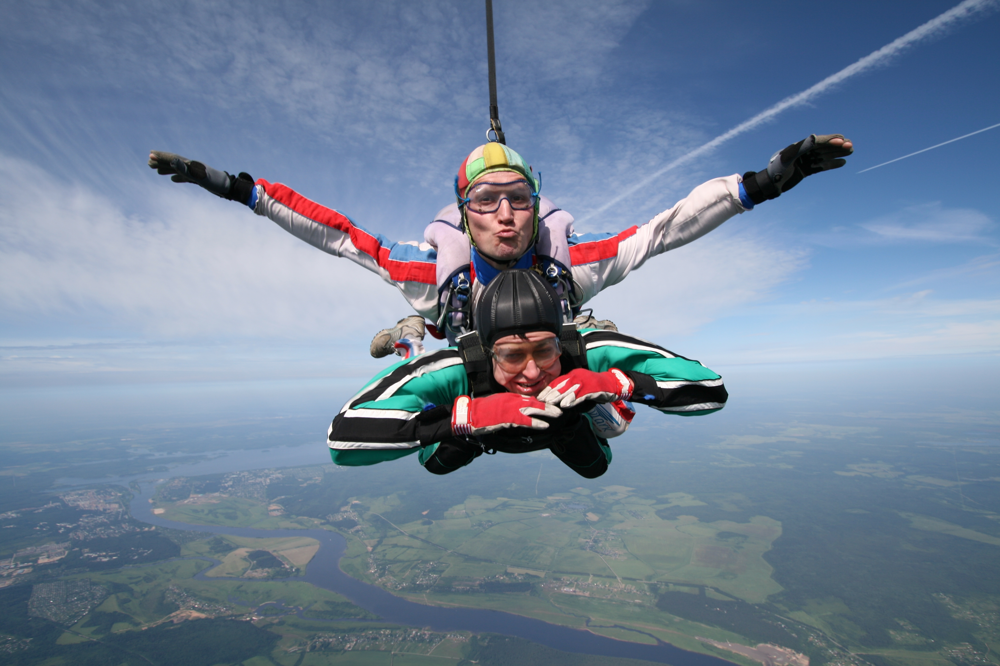
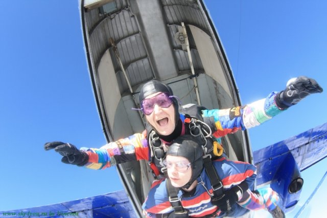

Мечтаете испытать ни с чем несравнимое чувство полёта и при этом безумно боитесь сделать первый шаг?! Тогда тандем-прыжок создан специально для Вас! Вы просто приезжаете на аэродром с огромным желанием прыгнуть.

Тандем-прыжок - это на сегодняшний день самый простой и безопасный способ для того, чтобы совершить свой первый прыжок с парашютом! Он подходит практически всем: и детям, и взрослым, и людям с ограниченными возможностями, потому что во время тандем-прыжка за Вас всё сделает опытный и лицензированный инструктор, находящийся за Вашей спиной!
От Вас потребуется заполнить анкету, пройти небольшой медосмотр, прослушать двадцатиминутный инструктаж, а также приготовиться к получению невероятного удовольствия от свободного падения. Перед взлетом инструктор расскажет всю необходимую информацию о прыжке – что можно делать, что нельзя, как вести себя на аэродроме, в самолете, свободном падении, под открытым куполом и на приземлении. Также инструктор выдаст Вам обмундирование: специальный комбинезон, шлем, перчатки, очки, и наденет подвесную систему, с помощью которой в самолете прицепит Вас к себе! Весь процесс наземной подготовки по Вашему желанию может заснять на фото- и видеоаппаратуру профессиональный воздушный оператор.
В самолете инструктор еще раз расскажет о действиях, которые Вам необходимо будет выполнить в полете, и сделает все манипуляции, для того чтобы прыжок был безопасным, и Вы получили максимальное удовольствие… И вот Вы уже стоите у обреза двери самолета, пытаетесь лучезарно улыбаться оператору и неумело скрыть Ваш страх! Толчок, сальто, еще одно, струя свежего и чистого воздуха в лицо, дыхание остановилось, хочется кричать, но вот Земля перестала вращаться, горизонт вернулся нава свое место и перед Вашим лицом появился веселый парашютист с камерой на голове, который весь полет будет стараться сделать наилучший кадр Ваших полных безумного счастья глаз! Но все хорошее когда-нибудь заканчивается и свободное падение тоже! Длится это хорошее в среднем 50-60 секунд, все зависит от Вашей собранности и веса, для кого-то это целая вечность, а для кого-то только миг!
За всей эйфорией Вы даже не заметите, что Вас слегка дернуло, парашют уже давно открылся и только бодрый голос Вашего инструктора вернёт часть разлетевшихся мыслей обратно в голову! А теперь необходимо как можно быстрее сконцентрироваться, потому что именно тогда Вам в руки доверят управление парашюта и, рассекая в воздухе, Вы начнёте по-настоящему завидовать птицам. Но Земля стремительно набегает, Вы уже ощущаете твердую почву под своими ногами и вовсю расспрашиваете инструктора об обучении парашютному спорту и прохождении программы AFF. После просмотра видео и фото прыжка эти идеи еще более прочно засели в Вашей голове?! Что ж значит до скорой встречи на аэродроме и в свободном падении!